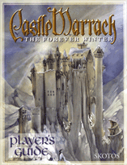
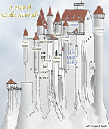

Get Player's Guide
Get Maps
The Castle Marrach Player's Guide, version 2.1 – A gorgeous and comprehensive guide of Castle Marrach in a downloadable 48-page PDF (1.0 Mb). This is a must for all Marrach players.
These excerpts from, supplements to, and updates of the Player's Guide contain more basic information that any Marrach player will want to have.
Player Scenes (2 scenes) Maps of the Castle (9 maps) The Capitulary (laws & punishments)